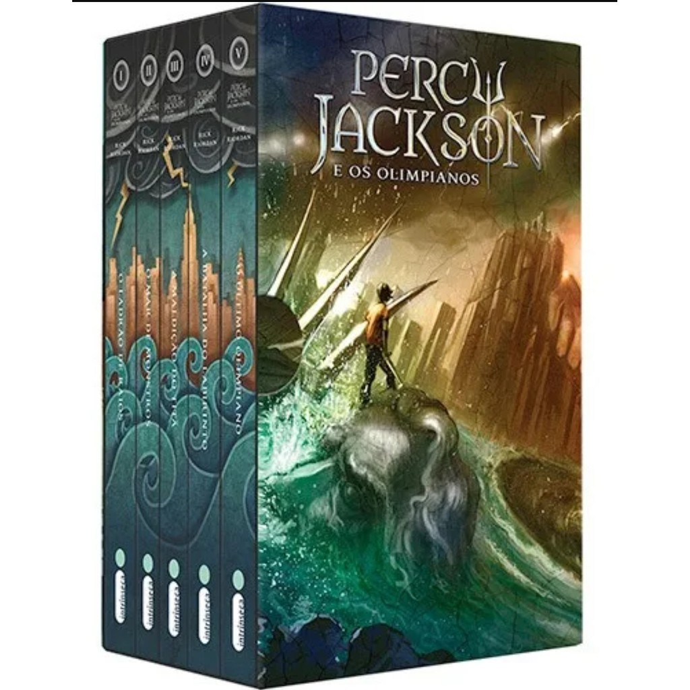

Confira abaixo as informações sobre o livro da Saga Percy Jackson
Selecione a imagem acima para ser direcionado ao site de compras
Os cinco livros da série que se tornou fenômeno mundial, em edição limitada e com design exclusivo: as cinco lombadas dos livros compõem, juntas, uma ilustração especial de John Rocco. Em O ladrão de raios, Percy Jackson, o menino que aos doze anos descobre que é um semideus, filho de Poseidon, precisa impedir uma guerra entre os deuses que destruiria a civilização ocidental; em O Mar de Monstros, ele e os amigos se envolvem em uma perigosa aventura para defender o acampamento dos semideuses; em A maldição do titã, Percy descobre que o Senhor dos Titãs despertou e está disposto a destruir a humanidade; em A batalha do Labirinto, o semideus vai combater o perigoso titã no temido Labirinto de Dédalo; e em O último olimpiano, Percy tem que lidar não só com o exército de Cronos, mas também com a chegada de seu décimo sexto aniversário — e, assim, com a profecia que determinará seu destino.